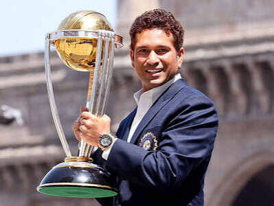

Sachin Ramesh Tendulkar born on 24 April 1973 is an Indian former international cricketer who captained the Indian national team. Tendulkar is widely regarded as one of the greatest cricketers in the history of cricket. He holds several world records, including being the all-time highest run-scorer in international cricket, receiving the most player of the match awards in international cricket, and being the only batsman to score 100 international centuries.Tendulkar was a Member of Parliament, Rajya Sabha by presidential nomination from 2012 to 2018.
Tendulkar took up cricket at the age of eleven, made his Test match debut on 15 November 1989 against Pakistan in Karachi at the age of sixteen, and went on to represent Mumbai domestically and India internationally for over 24 years.In 2002, halfway through his career, Wisden ranked him the second-greatest Test batsman of all time, behind Don Bradman, and the second-greatest ODI batsman of all time, behind Viv Richards. The same year, Tendulkar was a part of the team that was one of the joint-winners of the 2002 ICC Champions Trophy. Later in his career, Tendulkar was part of the Indian team that won the 2011 Cricket World Cup, his first win in six World Cup appearances in six World Cup appearances in six World Cup appearances for India. He had previously been named "Player of the Tournament" at the 2003 World Cup.Tendulkar has received several awards from the government of India: the Arjuna Award (1994), the Khel Ratna Award (1997), the Padma Shri (1998), and the Padma Vibhushan (2008).
After Tendulkar played his last match in November 2013, the Prime Minister's Office announced the decision to award him the Bharat Ratna, India's highest civilian award. He was the first sportsperson to receive the award and, as of 2024, is the youngest recipient. Having retired from ODI cricket in 2012, he retired from all forms of cricket in November 2013 after playing his 200th Test match. Tendulkar played 664 international cricket matches in total, scoring 34,357 runs. In 2013, Tendulkar was included in an all-time Test World XI to mark the 150th anniversary of Wisden Cricketers' Almanack, and he was one of only two specialist batsmen of the post–World War II era, along with Viv Richards, to get featured in the team.
2001 – 02: Mike Denness incident, Australia test series, and breaking Bradman's record Source_
2003 : Cricket World Cup Source_
2003 – 04: Tour of Australia. Source_
2007 : Cricket World Cup. Source_
2008 : Return to Tests and breaking Brian Lara's record. Source_